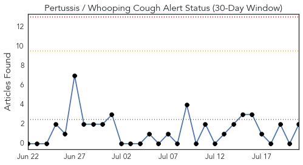
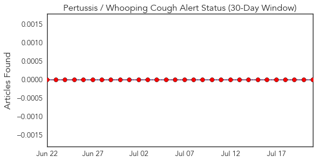
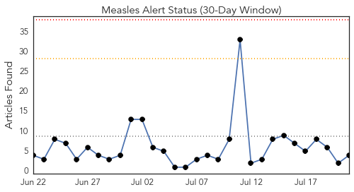
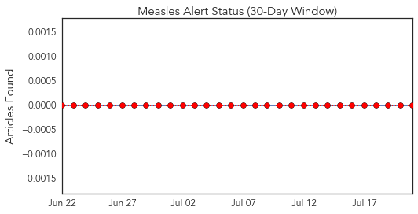
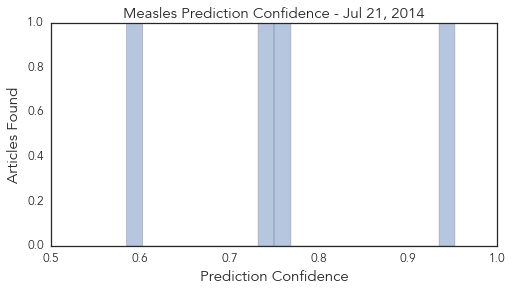

Pertussis
30-Day Web Trend
0 alerts, 0 warnings

30-Day Twitter Trend
0 alerts, 0 warnings

Article Locations
Article Confidences

Top Articles:
Top Tweets:
-
No tweets found for Jul 21, 2014
Measles
30-Day Web Trend
0 alerts, 0 warnings

30-Day Twitter Trend
0 alerts, 0 warnings

Article Locations
Article Confidences
Top Articles:
- 0.953
- Sedgwick County will continue giving free measles shots
- 0.755
- Fayetteville, Breaking News, Newspaper, Lincoln County, Park City, Flintville, Petersburg, Redstone, Huntsville, Hazel Green, Goodman, Frito-Lay, Stonebridge, Elk River, Distillery, Motlow, Fair in Te
- 0.735
- Don’t buy anti-vaccination rhetoric
- 0.585
- No, in fact, refugee children do NOT pose a health threat, says health expert
Top Tweets:
-
No tweets found for Jul 21, 2014